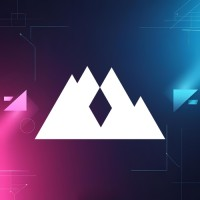
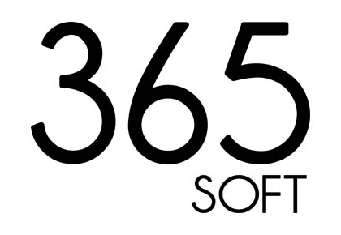
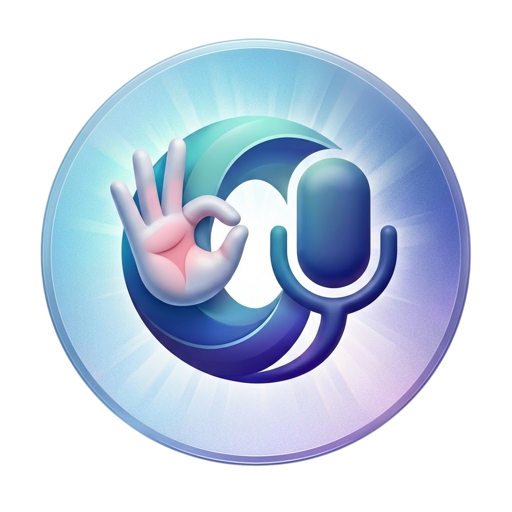
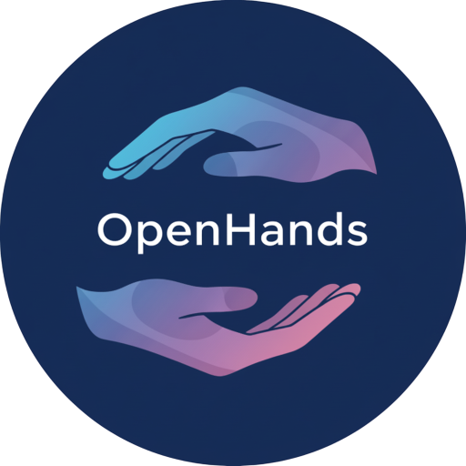

Mobile
Cross-platform and native apps with clean architecture, offline fallbacks and camera, speech and ML on device.
( Portfolio — 2026 )
Full-stack software developer & systems engineer. I build mobile apps, backends and AI-powered products — from Flutter screens to AWS Lambdas.
01 / About
Systems engineer, graduated October 2026. I turn real problems into working software — a sign language app for legal procedures, a gym admin platform, an inventory system for an importer. I work test-first, ship in small steps, and use AI as a teammate, not a shortcut.
02 / Toolkit
Cross-platform and native apps with clean architecture, offline fallbacks and camera, speech and ML on device.
REST and WebSocket APIs that stay boring under load.
Serverless services and secure data rules.
Gesture and sign recognition, RAG pipelines with embeddings, and deep learning for text.
Full list
03 / Experience

Jul — Sep 2026Backend for FitnessClubPass, a gym and partner admin platform on Firebase. Designed and tested the roles and permissions model (Firestore rules, protected routes, invitation onboarding), built the paginated monthly check-in report with server-side filtering, and wrote admin migration scripts and dev/prod environments.

Jan — May 2026Built modules of ImportadoraSCZ, an inventory, sales and cash system for an importer. Standardized PDF and Excel reports and improved the UX of sales and inventory screens.
04 / Process
Who it's for. What winning looks like.
What it does and how it connects.
Modules that stand on their own.
The feel, decided before the code.
Best tool for the job — and why.
Spec → test → code → demo.
CI, deploy, feedback, repeat.
05 / Selected work
A two-way communication app so deaf and hearing people can hold conversations during legal procedures with Bolivian public institutions, using a 3D avatar for Bolivian Sign Language. Flutter with Clean Architecture, plus AWS Lambda, Bedrock and Polly behind a RAG corpus of 167 procedures and 616 questions. 330+ commits.
See on GitHub →
Real-time sign alphabet recognition. A Flask and Socket.IO backend runs MediaPipe, scikit-learn and PyTorch (ONNX) with multi-user isolation, and a native Android client in Kotlin and Jetpack Compose streams the camera feed through CameraX.
Get it on Google Play →
A touchless interactive kiosk for a university, controlled by hand-sign recognition. I collected datasets, retrained the model, and built the Flask backend with scrapers that keep careers, news and calls for applications up to date.
See on GitHub →Deep learning for finance: trained and evaluated PyTorch models for sentiment classification in Jupyter, comparing three experiments on accuracy and training time.
See on GitHub →06 / Contact
Systems Engineer · Universidad Católica Boliviana “San Pablo” · 2021 — 2026 | Spanish (native) · English (upper-intermediate / advanced)